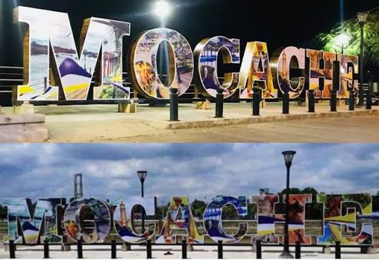
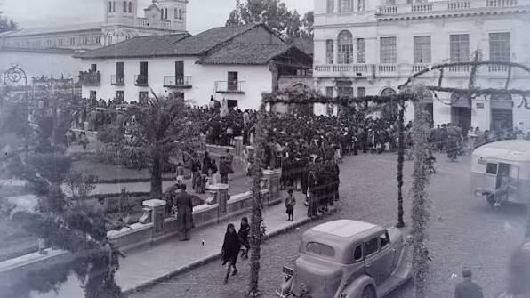
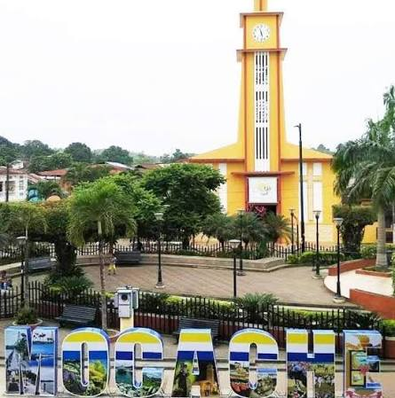
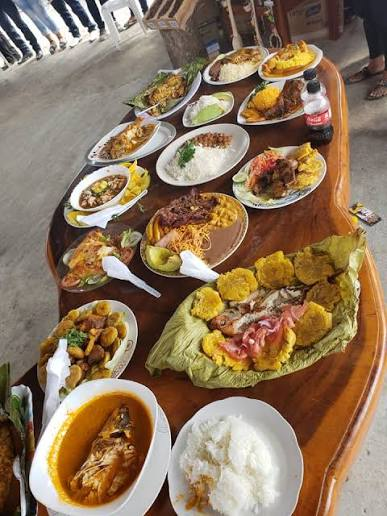
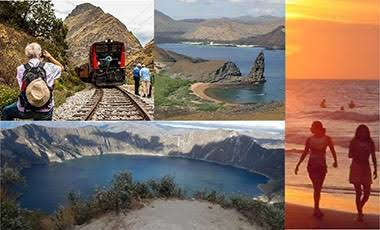
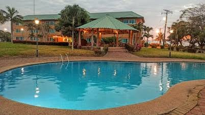
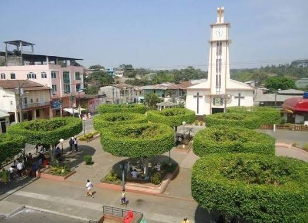

Autoridades

Alcaldesa: Jenny Domínguez

Bienvenido a la página oficial del cantón Mocache. Situado en la zona central de la provincia, Mocache es un pueblo vibrante conocido por su rica producción agrícola, la calidez de su gente y la preservación de las tradiciones montubias.

Mocache tiene raíces antiguas, vinculadas a las culturas precolombinas de la zona. Durante la colonia y la república, se desarrolló como un importante centro agrícola. El 28 de mayo de 1996 fue oficialmente cantonizado, marcando un hito en su desarrollo y autonomía.

El cantón Mocache cuenta con una división administrativa urbana y rural:

La culinaria de Mocache ofrece sabores auténticos y criollos del campo ecuatoriano:

Destacan el majestuoso Río Mocache, ideal para paseos en canoa y la pesca deportiva; la Iglesia Central; y las diversas haciendas cacaoteras y bananeras que ofrecen experiencias de agroturismo.

Mocache ofrece opciones de alojamiento sencillas y acogedoras, como hostales en el centro de la ciudad y algunas fincas agroturísticas en los alrededores, ideales para quienes buscan una experiencia auténtica en el campo.
Alcaldesa: Jenny Domínguez

Cuenta con una población aproximada de 40,000 habitantes, caracterizada por ser trabajadora, hospitalaria y profundamente arraigada a sus costumbres y tradiciones agrícolas.
Mocache se localiza en la zona central de la provincia de Los Ríos. Limita al norte con Quevedo y Buena Fe, al sur con Palenque y Vinces, al este con Quevedo y El Empalme (provincia del Guayas), y al oeste con Palenque.